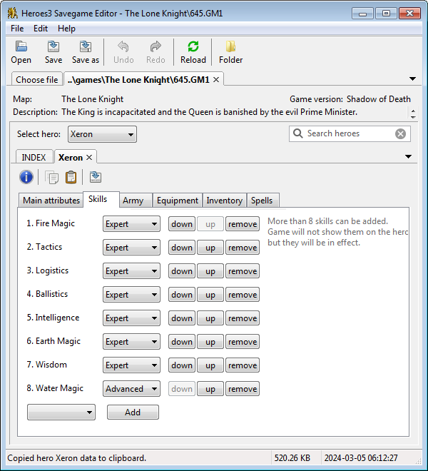

Index
Using the program
Installation
Source dependencies
Attribution
License
Downloads
Changelog
View the Project on GitHub suurjaak/h3sed
h3sed is a Heroes3 Savegame Editor, written in Python.
It opens savegame files from Heroes of Might and Magic III, allowing to see an overview of all heroes, and edit any and all hero attributes:
Attributes can be copied from one hero and pasted to another.
Hero data can be exported as HTML or spreadsheet.
Supports savegames from: Restoration of Erathia, Armageddon's Blade, Shadow of Death, Heroes Chronicles, and Horn of the Abyss.
Navigate the file view to Heroes3 games-folder, and open a savegame file to edit, or drag and drop a savegame file onto the program window. .
Choose a hero to modify, change attributes to your liking, and save the file. Changes will be available in Heroes3 after loading the changed savegame.
Attributes from one hero can be copied to clipboard as text, and pasted onto another hero, overwriting their data.
A timestamped backup copy is automatically created of the savegame file, one per day.

Note: savegames from different releases of Armageddon's Blade may have different structure for artifacts and inventory. For working with savegames from an earlier version, uncheck "New format in Armageddon's Blade" in program menu File -> Options.
Warning: as Heroes3 savefile format is not publicly known, loaded data and saved results may be invalid and cause problems in game. This program is based on unofficial information gathered from observation and online forums.
Windows: download and launch the latest setup.
Mac/Linux/other: install Python and pip, run pip install h3sed.
The pip installation will add the h3sed command to path.
Windows installers have been provided for convenience. The program itself is stand-alone, can work from any directory, and does not need additional installation. The installed program can be copied to a USB stick and used elsewhere, same goes for the source code.
If running from pip installation, run h3sed from the command-line. If running straight from source code, open a terminal to h3sed/src and run python -m h3sed.
If running from source code, h3sed needs Python 2.7 or Python 3.6 or higher, and the following 3rd-party Python packages:
Knowledge on Heroes3 savegames gathered mostly from Heroes Community forum, heroescommunity.com/viewthread.php3?TID=18817.
Includes several icons Heroes of Might and Magic III, © 1999 3DO.
Binaries compiled with PyInstaller, www.pyinstaller.org.
Installers created with Nullsoft Scriptable Install System, nsis.sourceforge.net.
The MIT License
Copyright © 2020 by Erki Suurjaak
Permission is hereby granted, free of charge, to any person obtaining a copy of this software and associated documentation files (the "Software"), to deal in the Software without restriction, including without limitation the rights to use, copy, modify, merge, publish, distribute, sublicense, and/or sell copies of the Software, and to permit persons to whom the Software is furnished to do so, subject to the following conditions:
The above copyright notice and this permission notice shall be included in all copies or substantial portions of the Software.
The software is provided "as is", without warranty of any kind, express or implied, including but not limited to the warranties of merchantability, fitness for a particular purpose and noninfringement. In no event shall the authors or copyright holders be liable for any claim, damages or other liability, whether in an action of contract, tort or otherwise, arising from, out of or in connection with the software or the use or other dealings in the software.